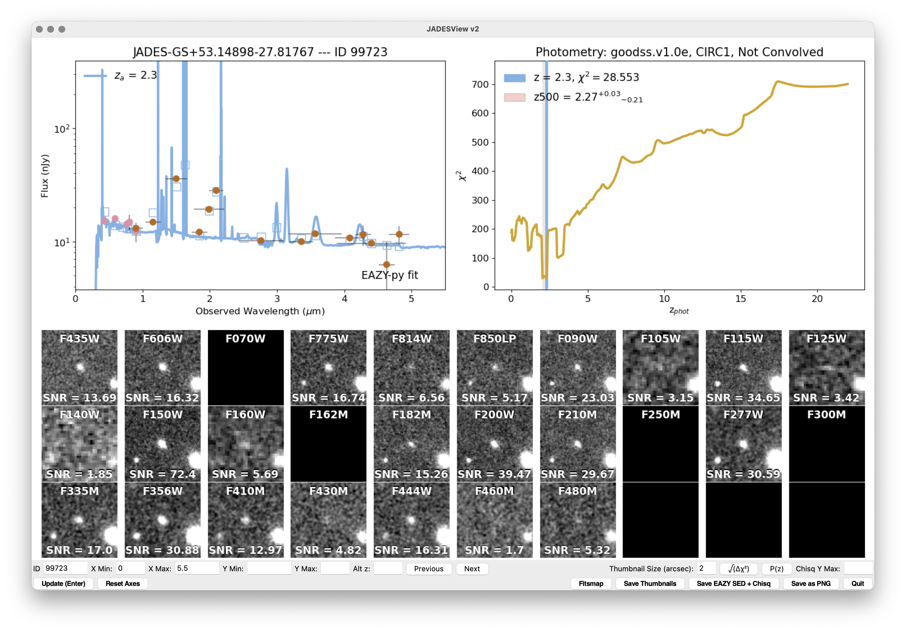

01 What is JADESView?
JADESView is a Python script that allows the user to explore the photometric SEDs and imaging thumbnails for sources in the JWST Advanced Deep Extragalactic Survey (JADES) public data. After downloading the public catalogs and (optionally!) the reduced mosaics, this software will allow the user to run fits to a source or user-supplied list of sources using the code EAZY, after which it will present the SED, the fit, χ²(z) (or probability as a function of redshift), and (again, optionally) thumbnails for each source using a list of mosaics. JADESView was designed to allow for a quick exploration of source SEDs at multiple redshifts, and can also be used to generate thumbnail .FITS files centered on the sources along with output SED fit files for use generating manuscript plots.
Because the user is running EAZY as a part of JADESView, it needs to be installed, and the user can explore alternate fits, to understand how trustworthy a given redshift is.
02 Installation and Setup
# I recommend creating a conda or mamba environment using the environment.yml file:
% conda env create -f environment.yml
# This will create a new conda environment, jadesview, from which you can run JADESView.
# You'll also want to install eazy-py in this environment:
% conda activate jadesview
% pip install eazy
% pip install git+https://github.com/karllark/dust_attenuation.git
03 The JADES Catalog and Mosaics
While JADESView could be adapted for other photometric catalogs (and maybe, I might actually update it to be more generic in the future!), currently it requires the format of the JADES catalogs and mosaics. You can read more about the format of the JADES catalogs at this page.
You can download the DR5 JADES catalogs and mosaics here, currently. While, eventually, they will be hosted on MAST, at the moment, this is the best way to get the data. If you just want to fit sources, all you need is the GOODS-S or GOODS-N photometric catalog from these pages. You can also specify the mosaics, and you can download those for GOODS-S and GOODS-N on these pages, although I should warn you that these files are very big, so you may just want to download these to an external drive, or only download a subset of the files if necessary.
04 How the Code Works
This tool was designed to allow users to look at SEDs, and EAZY fits to galaxies alongside thumbnails for objects, assuming the user is pointing to the official JADES photometric catalogs.
JADESView, as discussed in the previous section, requires the installation of EAZY-py, as it serves as a wrapper and visualizer for running this photometric redshift code on sources within the JADES catalog. In addition, the tool requires a number of other python packages, and is written using Python 3.12+. The primary parameters file is JADESView_input_file.dat, and the user will use this to point to the various photometry and mosaic files and also to change how the code is run.
05JADESView Parameters
When running JADESView, you'll need to point to a file with various input parameters. There is an example file showing the exact format provided on the github repo, but the primary parameters are detailed below.
Input Parameters
input_photometryconvolvedapertureuncertainty_e (aperture-corrected flux uncertainty determined from uncertainty model regression) or _ei (aperture-corrected flux uncertainty determined from mosaic ERR image).ancillary_filesJADESView_files/, which will contain the EAZY filter file, and the template set from Hainline et al. (2024). You'll want to point to where this directory is, here, and the code will create a symbolic link to this folder on your hard drive to access these files. filtersHST_F435W
HST_F606W
NRC_F090W
NRC_F115W
NRC_F150W
NRC_F200W
NRC_F277W
NRC_F335M
NRC_F356W
NRC_F410M
NRC_F444W
...min_rel_erreazy_ncoreszeropointtemplatestempfiltimage_listHST_F435W 0 /Path/to/Mosaic/File/F435W.fits
NRC_F090W 1 /Path/to/Mosaic/File/F090W.fits
NRC_F115W 1 /Path/to/Mosaic/File/F115W.fits
NRC_F150W 1 /Path/to/Mosaic/File/F150W.fits
NRC_F200W 1 /Path/to/Mosaic/File/F200W.fits
NRC_F277W 1 /Path/to/Mosaic/File/F277W.fits
NRC_F335M 1 /Path/to/Mosaic/File/F335M.fits
NRC_F356W 1 /Path/to/Mosaic/File/F356W.fits
NRC_F410M 1 /Path/to/Mosaic/File/F410M.fits
NRC_F444W 1 /Path/to/Mosaic/File/F444W.fits
...plot_thumbnailsgenerate_sedsgenerate_thumbnailsra_dec_size_value. These files will be created in a directory labeled by the source ID, where you're running JADESView.ra_dec_size_valuegui_widthfitsmap_linkhttps://jades.idies.jhu.edu/goods-s/index.html?ra=RA_VALUE&dec=DEC_VALUE&zoom=10
while for GOODS-N, it should be:
https://jades.idies.jhu.edu/goods-n/index.html?ra=RA_VALUE&dec=DEC_VALUE&zoom=10
The
RA_VALUE and DEC_VALUE tags are what the code searches for when creating the link that the button in the GUI uses.
It is recommended that you create a GOODS-S and a GOODS-N parameter file, and change the values there, including the image_list and fitsmap_link.
06 Running JADESView
Here's how you should run JADESView, from the jadesview environment. You'll specify the JADESView parameters with -jv_params, and then there are a few ways in which you can specify which sources to fit, either -id for an individual source, -idlist to point to a text file with a list of IDs, or -idarglist to provide IDs as a list, comma-separated, surrounded by single quotes:
(jadesview) % python JADESView.py -jv_params JADESView_input_file.dat -id 1234
(jadesview) % python JADESView.py -jv_params JADESView_input_file.dat -idlist list-of-IDs.dat
(jadesview) % python JADESView.py -jv_params JADESView_input_file.dat -idarglist '5, 6, 7, 8, 9, 10' Here's an example plot showing a run on a GOODS-S source, ID 99723:

In the top left corner the SED is plotted, with the observed photometry provided as red circular points, and the minimum-χ² fit to the source from EAZY provided in blue, with the model photometry corresponding to this fit given with blue squares. The redshift for this fit is given in the top left corner of this plot. Next to the SED, on the right, is the χ²(z) surface in orange, with a blue vertical line showing the minimum χ² value, presented in the key. In shades of grey are the 1σ uncertainties for the fit, which are also provided in the key. For more information about these uncertainties, see this portion of my EAZY-py Users Guide. If you click on this right plot, a new fit will be shown on the left, with the χ² value, showing fits from EAZY at those alternate redshifts.
Below these plots are the thumbnails for each provided filter, with the thumbnail size specified in the box at bottom, or the value of ra_dec_size_value on startup. At the top of each thumbnail is the filter name, and the bottom shows the flux signal-to-noise ratio for that filter.
Finally, at the bottom are values the user can specify, or buttons to change the plots. The user can provide a new ID from their input list in the far left box, they can change the wavelength (X) or flux (Y) limits in the next boxes. They can input their own alternate redshift (in lieu of clicking on the χ² plot, for more precision) in the final input box on the left. The "Previous" and "Next" buttons advance through the list of IDs. On the right there is an input box to change the size of the thumbnails, and then there's a button that will change from plotting χ² to plotting the square-root of the difference between the χ² corresponding to all redshifts and the redshift at the minimum χ², which is the statistical significance of the different fits. The next button, "P(z)", changes the plot from χ² to a probability surface. There's a box that allows you to change the maximum χ² you plot on the right panel.
Along the bottom are buttons that, on the left: Update the plot based on the input values and Reset the Axes to the standard values. On the right, there's a button that opens up your default browser and takes you to the Fitsmap focused on the source, a button that Saves the thumbnails as individual .FITS files, a button that Saves the EAZY SED at the current redshift being shown, and the χ²(z) surface as a pair of text files, a button that saves the whole GUI, as is, as a .png file, and finally, a button to Quit JADESView.
07 Common Pitfalls & Tips
JADESView.py itself, and you can go and update these within the code, by searching for # Set up the parameters, and adjusting what you find below.
Further Resources
Community guide · May 2026